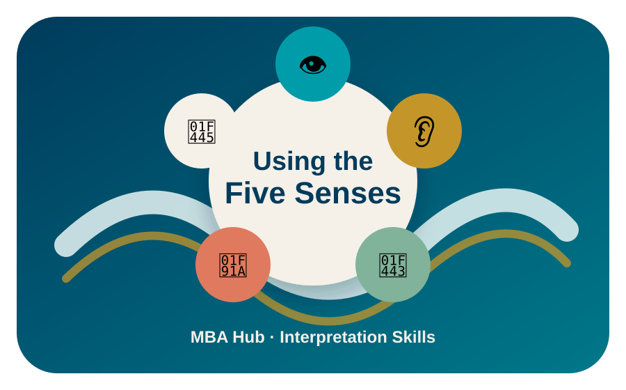

MBA Hub · Interpretation Skills
Engage all senses to make exhibits accessible and memorable for every guest.
v1.1 · Rebuilt from original MBA source · 2026-06-28

While many exhibits rely on sight, interpreters can deepen engagement by using clear verbal descriptions and involving touch, sound, smell, and occasionally taste. Multisensory interpretation benefits all visitors — not only guests who are visually impaired.
Use Clear Cache, then reload. On PC Chrome, press Ctrl + Shift + R. On iPhone Safari, clear website data if needed.
Confirm the Hub registry entry points to
apps/five-senses-pwa/index.html, uses the Hub’s exact field names,
and has "status": "Active".
Confirm this app folder is located at apps/five-senses-pwa/. The
Return to Hub link is ../../index.html.
Open the app once while online, allow it to fully load, then test offline again.
Tap × Close. On PC, press Escape. If needed, refresh and clear cache.